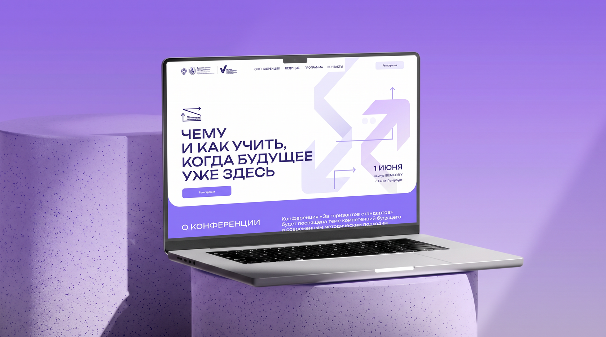
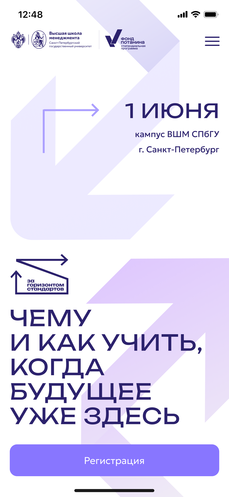
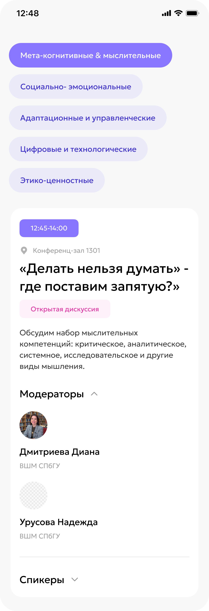
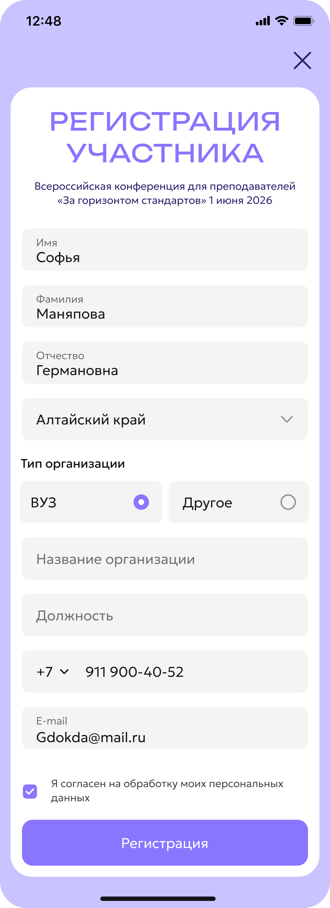

Промо-лендинг для Всероссийской конференции СПбГУ и фонда Потанина

Контекст
Создать лендинг и целостную айдентику конференции, которые:
- конвертируют посетителей в участников;
- визуализируют тему «за горизонтом стандартов» — выход за привычные рамки без потери академического веса.
Фонд Владимира Потанина и ВШМ СПбГУ запустили новую конференцию для преподавателей высшей школы — «За горизонтом стандартов». Мероприятие посвящено компетенциям будущего и новым методикам обучения.

Исследование и анализ
Изучила целевую аудиторию, их потребности и барьеры. Проанализировала форматы конференций и академических мероприятий, чтобы понять, что работает, а что утомляет.
Исследование аудитории показало: преподаватели 30–60 лет, преимущественно женщины. Им нужны эксперты, структура и понятная польза. Я спроектировала лендинг так, чтобы эти потребности закрывались на каждом экране: первый экран — с сутью, спикеры и основная информация по локации и дате — в верхней части страницы.
Я проанализировала сайты академических и образовательных конференций, включая ведущие вузы России и международные форумы.
Основные выводы:
- Чаще всего размещают программу списком, список спикеров и общую информацию о месте и времени. Редко — ценность для участника, чаще просто факты.
- Из минусов: несовременный визуал — устаревшая типографика, шаблонные решения. Много «водянистой» информации — общие фразы, за которыми не видно реальной пользы.
Структура и сторителлинг
Не имея готовых текстов, сама спроектировала сценарий лендинга: выстроила логику прогрессивного раскрытия — «что это?», «где и с кем?» и «зачем мне это?». Разработала структуру страницы, навигацию, а также сформулировала ключевые сообщения для аудитории.
Визуальное проектирование
Разработала дизайн-макеты лендинга на основе метафоры навигатора.



Рассказываем о событии, сначала отвечая на вопросы: где, когда и как попасть.
Далее идёт подробная информация о месте и дате проведения. Я не стала убирать её в самый низ, так как это один из ключевых вопросов, которые возникают у пользователя сразу после знакомства с темой.
Я разместила CTA-баннеры в точках, где пользователь готов принять решение.
Блок спикеров — ключевой для доверия. Выбирают не абстрактное мероприятие, а конкретных людей. Для удобства добавила табы по трекам: пользователь может фильтровать спикеров по направлению.
Отдельной задачей стала визуализация программы: большой объём информации, который мог перегрузить пользователя.
Чтобы сделать программу удобной, я добавила табы по трекам. Пользователь может фильтровать программу по направлениям, не теряясь в общем списке. Это снизило когнитивную нагрузку и улучшило навигацию.

Для преподавателей статус организаторов — один из ключевых факторов доверия. Подробная информация о роли Фонда и ВШМ — для тех, кто хочет глубже понять, кто стоит за конференцией.
Регистрация — заключительный шаг в пользовательском сценарии. К этому моменту все вопросы сняты, остаётся только подтвердить участие.

Заключение
Спроектировала информационную архитектуру и UX/UI промо-лендинга с нуля для Всероссийской конференции от СПбГУ и фонда Потанина. Переработала большой объём неструктурированных данных в понятный пользовательский путь, обеспечив удобную регистрацию и онбординг для 200+ участников конференции.